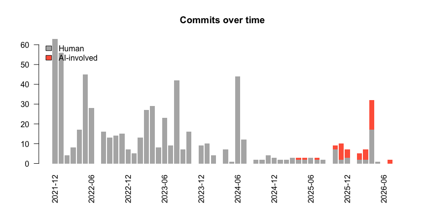
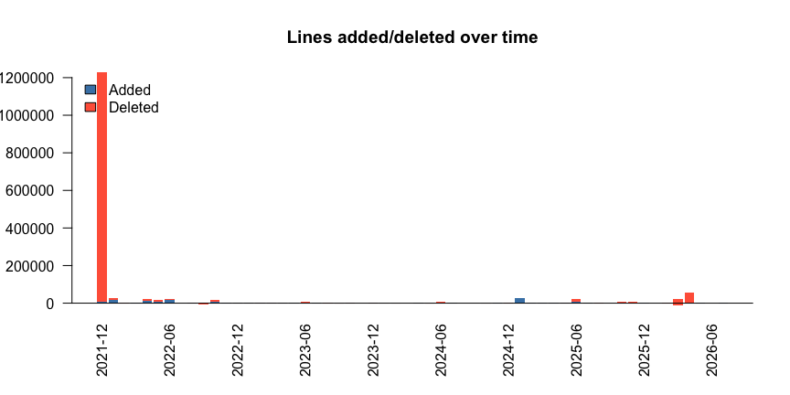

aitracking is a lightweight R pipeline to measure the effects of AI-assisted coding on software projects using the GitHub REST API. It retrieves commit histories (with lines added/deleted), issue and pull request conversations, download/clone statistics, and the evolution of a project’s size; classifies which of those events involved an AI coding agent; and visualizes the result.
Design goals:
-
Minimal dependencies. The GitHub API client is written with base R connections; the only hard dependencies are
data.tableandjsonlite. -
Pipe-friendly. Every function takes data as its first argument and returns a
data.table, so steps compose with R’s native pipe|>. -
Parsimonious AI detection. A small, transparent set of rules (author/committer identities,
Co-authored-by:/Generated withtrailers, and@-mentions) flags AI involvement. Extend it with your own patterns.
Authentication
Functions look for a GitHub token via gh_token(): an explicit token argument, the GITHUB_PAT/GITHUB_TOKEN environment variables, or the git credential store (if the gitcreds package is installed). Unauthenticated requests work but are rate-limited to 60 calls/hour (5,000/hour with a token).
Example
Retrieve a commit history, add per-commit line counts, tag AI involvement, and plot it:
library(aitracking)
commits <- gh_commits("UofUEpiBio/epiworld") |> # the full commit history...
gh_commit_lines() |> # ...+ lines added/deleted
ai_classify() # ...+ AI involvement flagsThe package ships a snapshot of the commit history of the UofUEpiBio/epiworld C++ library, so the above can be reproduced offline:
library(aitracking)
data(epiworld_commits)
commits <- ai_classify(epiworld_commits)
commits[, .(sha = substr(sha, 1, 7), author, date, ai, ai_agent)] |>
tail() sha author date ai ai_agent
<char> <char> <POSc> <lgcl> <char>
1: 8a992b6 gvegayon 2026-04-29 03:56:48 FALSE <NA>
2: 95344d3 gvegayon 2026-04-29 07:28:32 FALSE <NA>
3: 68f9f34 gvegayon 2026-04-29 07:54:12 FALSE <NA>
4: c966f02 gvegayon 2026-05-11 05:43:58 FALSE <NA>
5: 1c1cf02 Copilot 2026-07-17 05:27:19 TRUE copilot
6: b11c350 gvegayon 2026-07-31 15:32:19 TRUE copilot
plot_timeline(commits, by = "commits")
plot_timeline(commits, by = "lines")
See the package vignette (vignette("epiworld")) for a complete walk-through: when AI became involved in epiworld, and how commit and coding activity changed since.
Main functions
| Function | Description |
|---|---|
gh_commits() |
Commit history (author, hash, message, time) of one or more repos |
gh_commit_lines() |
Lines added/deleted per commit (optionally per file) |
gh_interactions() |
Issues, PRs, and comments–including human requests to AI agents |
gh_assignments() |
Issues/PRs and who they are assigned to, flagging AI agents |
gh_pulls() |
Pull requests, including the head branch (agent branch prefixes) |
gh_traffic() |
Clone/view history (last 14 days, requires push access) |
gh_downloads() |
All-time download counts of release assets |
gh_languages() |
Current language composition of a repo |
ai_classify() |
Tag rows where an AI agent was involved (or mentioned) |
loc_evolution() |
Evolution of project size (net lines of code, by language) |
plot_timeline() |
Activity timeline by commits or by lines added/deleted |
gh_copilot_metrics() / gh_copilot_seats()
|
Org-level Copilot usage (see below) |
gh_api() / gh_token()
|
Low-level API access and token discovery |
How AI involvement is detected
There is no single field in the GitHub API that says “AI wrote this”, so ai_classify() combines the traces that projects and agents actually leave, and reports them in two tiers:
Confirmed (ai == TRUE)
-
Agent identities in author, committer, assignee, or commenter fields (
Copilot,devin-ai-integration[bot],cursoragent, …). Note that GitHub’s coding agent appears as the loginCopilotof typeBotwithout a[bot]suffix, and that some agents are plainUseraccounts – so neither the suffix nor the account type is sufficient on its own. -
Attribution trailers in commit messages and PR/issue bodies:
Co-authored-by:(what Copilot, Claude, and Cursor emit by default), and theAssisted-by:convention some projects prefer because it marks assistance without implying co-authorship.
Suspected (ai_suspected == TRUE)
-
Agent branch prefixes such as
copilot/fix-thingorcodex/add-tests. This is the longest-lived trace – it survives squash-merges – but it is weaker evidence, because a human may create the branch on the agent’s behalf: several agents cannot open pull requests themselves, so a developer runs the agent locally, pushes its branch, and opens the PR under their own account. Treataias a lower bound andai | ai_suspectedas an upper bound.
Separately, ai_mention flags text that addresses an agent (@copilot fix this), which is a proxy for how much humans are prompting AI.
Undisclosed assistance – code written with editor completions and committed under a human identity with no trailer – is not detectable from API metadata at all. Every figure this package produces is therefore a lower bound.
Copilot usage metrics
If you administer the organization, gh_copilot_metrics() wraps GitHub’s Copilot usage metrics API (suggestion/acceptance counts, lines suggested and accepted, active users, chat activity). Two caveats matter:
- It requires organization ownership and the “Copilot usage metrics” policy enabled; otherwise every request returns
HTTP 403. - Metrics are aggregated at the organization/enterprise level. There is no public per-repository endpoint for suggestion counts, and nothing exposes tokens or hours spent. For repositories you do not administer, the history-based measures above are the only option.
gh_copilot_seats() is far more accessible (it needs only read:org) and reports per-user seat assignment and last activity.
Related work
If you need a full-featured GitHub API client, see the gh package. aitracking deliberately implements its own minimal client to keep the dependency footprint small.